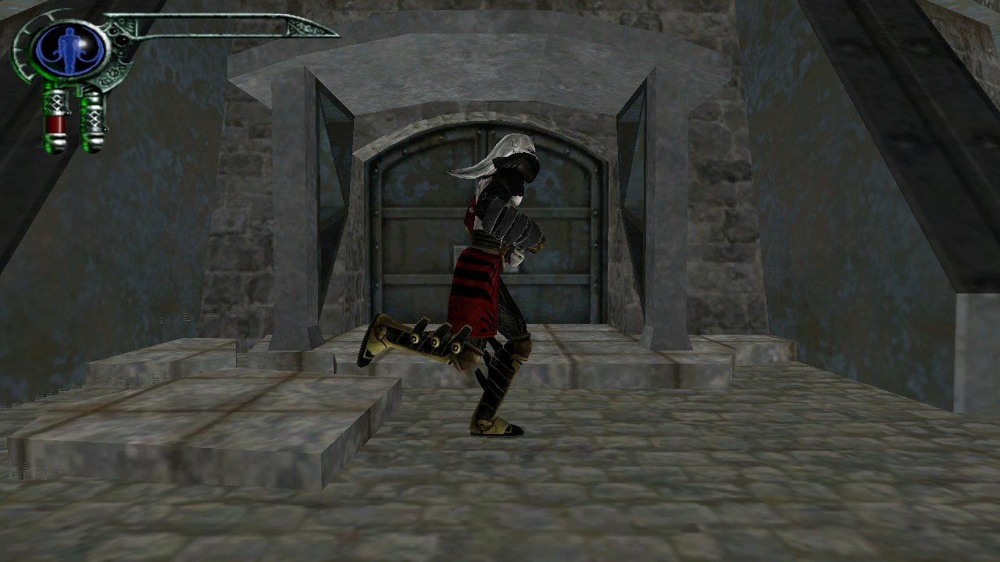

Blood Omen 2 · port nativo para Nintendo Switch
English
9.1%
progreso global

Componentes
Funciones traducidas · peso 60%
349 / 17 110 · 2.04%
Capítulos completables · peso 30%
0 / 11 · 0.00%
Características de plataforma · peso 10%
9 / 12 + 1 parcial · 79.17%
35 712 funciones en el mapa: 349 traducidas, 236 en curso, 16 525 pendientes y 18 602 externas (no son código del juego).
Una función cuenta solo cuando el port reproduce todo su contrato y una prueba lo respalda; cada una suma unos 0,0035 puntos, un capítulo 2,7 y una característica de plataforma 0,8.
Funciones por sistema
traducidasen curso
Scripts
298 · 79
Animación
23 · 60
Jugador
7 · 41
Niveles
8 · 25
Cámara
5 · 7
Render
0 · 9
Idiomas
5 · 3
Colisión
0 · 5
Motor
3 · 0
Entidades
0 · 3
Texto
0 · 3
Ui
0 · 1
Capítulos de la campaña
Slumstodavía no
Smugglers Dentodavía no
Lower Citytodavía no
Upper Citytodavía no
Sarafan Keeptodavía no
Industrial Quartertodavía no
Canyonstodavía no
Eternal Prisontodavía no
Devicetodavía no
Wharvestodavía no
Hylden Citytodavía no
Plataforma
Esqueleto del hostlista
Contenedor del instalador (SFXI)lista
Lectores BIG y RKVlista
Recursos validadoslista
Primer fotograma sin ventanalista
Geometría de niveles (cellgrup)lista
Texturas de niveles (DDS)lista
Renderizador del host (OpenGL)lista
Renderizador de Switch (deko3d)pendiente
Audioparcial
Entradalista
Video (Bink)pendiente
Mapa del código

Hitos
- M0Laboratorio y triaje del binariocompleto7 de 7 tareas
- M1Contenedores y recursoscompleto15 de 15 tareas
- M2Esqueleto del host y primer fotogramaen curso24 de 29 tareas
- M3Porción jugableen curso · fase actual22 de 38 tareas
- M4Sistemas completosen curso23 de 58 tareas
- M5Contenido completosin iniciar0 de 5 tareas
- M6Lanzamiento en Switchsin iniciar0 de 6 tareas